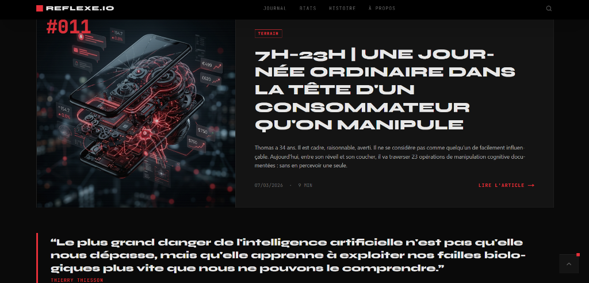
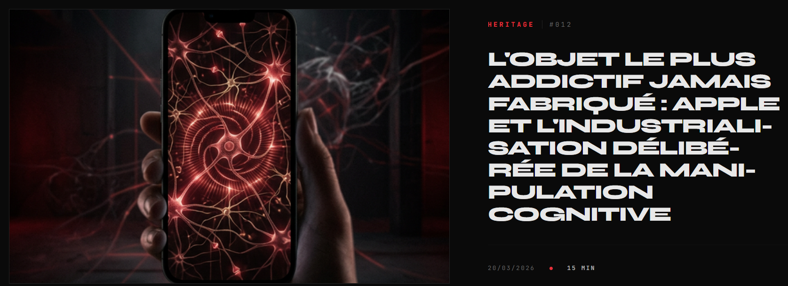
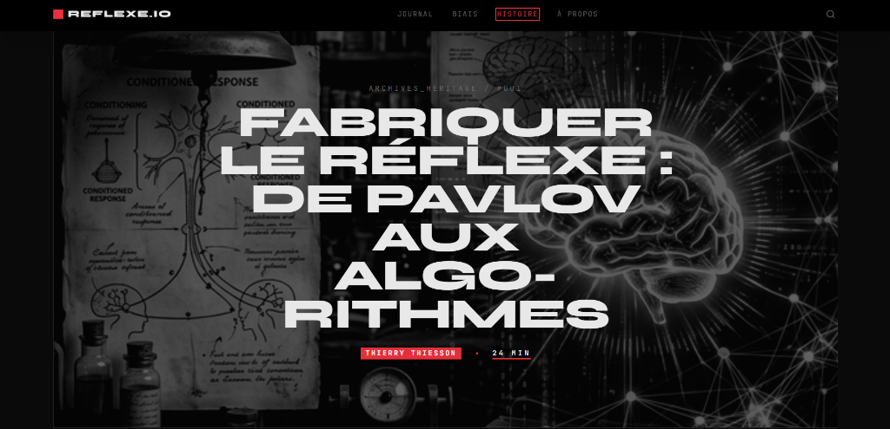

Ownership total
Je prends possession de la stack e-commerce de bout en bout — architecture, performance, CRO, SEO technique. Pas de silos, pas de demi-mesures. Je suis responsable des résultats, pas des livrables.
Head of E-commerce Tech · Web Engineer · Product Builder
Je prends la tête de votre stack e-commerce et je la transforme en avantage compétitif mesurable.
40 ans à l'intersection du code, du produit et de la croissance
je livre des plateformes qui convertissent, performent et scalent.
Ce que je fais en quelques jours,
certaines équipes mettent des mois à produire.

Découvrez en 2 minutes comment j'articule vision business, excellence technique et innovation (IA/RAG) pour propulser les plateformes e-commerce à haut trafic.
Un Head of E-commerce Tech n'est pas un chef de projet technique. C'est le pont entre la stratégie business et l'exécution technologique.
Je prends possession de la stack e-commerce de bout en bout — architecture, performance, CRO, SEO technique. Pas de silos, pas de demi-mesures. Je suis responsable des résultats, pas des livrables.
Chaque décision technique est évaluée à l'aune de son impact business. Temps de chargement, funnel de conversion, expérience utilisateur — tout est mesurable, tout doit performer.
Je peux coder autant que diriger une équipe. Cette double casquette — praticien expert et visionnaire produit — me permet d'aligner tech et métier sans friction ni perte en traduction.
Je travaille à l'intersection de trois mondes — et c'est là que se crée l'avantage concurrentiel.
E-commerce, catalogues produits complexes, SEO à grande échelle, identité de marque, gouvernance de données, automatisation de flux. Je pilote l'ensemble, pas un fragment.
Je ne me contente pas d'utiliser l'IA. Je conçois les systèmes qui la font travailler — pipelines, connecteurs, workflows HITL. La différence entre un outil et une infrastructure.
Génération visuelle IA, rédaction SEO automatisée, PIM industrialisé, flux synchronisés. De l'idée au livrable — sans perte, sans doublon, sans délai.
Je sais quoi confier à l'IA. Je sais quoi garder pour l'humain.
Je sais comment assembler les deux pour que ça tienne dans le temps.
Des responsabilités croissantes, une expertise qui s'élargit à chaque mission.
Conception et développement from scratch d'une plateforme e-commerce premium dans l'univers du chanvre — 3 univers de marque distincts, assistant IA RAG, outils interactifs propriétaires. Livré en 5 semaines.
27 ans à la croisée du développement front, du CRM, du SEO et de la gestion de projet. Pilotage de plateformes e-commerce à fort trafic, optimisation de parcours utilisateurs, intégration et automatisation emailing.
Des projets livrés, pas des POC. Des résultats mesurables, pas des promesses.
[ Projet phare · 5 semaines · 2026 ]
Plateforme multi-univers en React/TypeScript avec assistant IA RAG, outils propriétaires et top 1% conversion.
[ Projet solo · 3 jours · 2026 ]
Journal éditorial solo sur la manipulation cognitive. 12 articles de fond, identité visuelle sur mesure, scores Lighthouse au vert.



[ Outil SaaS · 2026 ]
Outil de monitoring SEO propriétaire — suivi positionnements, alertes régressions, tableaux de bord temps réel.
[ Stratégie · 2026 ]
Stratégie marketing complète pour une marque e-commerce : positionnement, funnel, content strategy, plan d'activation omnicanal et KPIs.
Pas des POC. Pas des maquettes. Des systèmes prêts à l'emploi.
Ce portfolio — et le projet Gardenz — n'ont pas été créés de façon classique.
J'ai conçu et mis en place un process IA augmenté combinant l'écosystème Google AI et d'autres outils spécialisés,
gouverné par des règles strictes de qualité, best practices et cohérence design.
Résultat : une vitesse d'exécution radicale sans sacrifier la précision.
[ Scores Lighthouse — Production ]
Chaque projet que je construis est aussi un objet de design.
Sur Gardenz, j'ai défini de A à Z l'identité visuelle, le système de design, la palette de couleurs et la typographie — en orchestrant la génération de visuels et vidéos via Whisk & Flow.
L'IA génère. Les règles strictes gouvernent. Le goût tranche.
[ Concept IA · Humour · 2026 ]
Projet fictif · 2026
Et si Nike arrêtait de se prendre au sérieux ?
Une campagne décalée, jamais vue dans l'univers Nike.
Créée sans agence, sans studio, sans être créatif.
Le Concept : Imaginer une campagne Nike Air Max 90 radicalement différente de tout ce que la marque a produit exit le performance, exit l'émotion sportive. À la place : de l'humour absurde joué au premier degré. Une chaussure iconique détournée de son usage, mise en scène dans des situations improbables avec un sérieux imperturbable.
Le Territoire Créatif : Humour absurde · Premier degré · Anti-pub · Iconique vs Quotidien
Compétences Démontrées
Les Outils
[ Campagne IA · Luxe · 2026 ]
Campagne digitale complète · 2026
De zéro à une campagne luxe complète en une session.
Sans photographe. Sans agence. Sans studio.
Et sans être créatif.
Le Brief : Créer de toutes pièces une marque de haute horlogerie positionnée CSP++, sur un territoire avant-garde et disruptif en rupture totale avec les codes classiques du secteur.
La Démarche : Rejet volontaire des codes visuels attendus du luxe horloger pour construire une identité inédite : chrome froid, bleu électrique, rue urbaine dégradée. La direction créative a émergé d'un dialogue itératif avec l'IA.
[ Design System — Gardenz ]
Palette de marque
Typographie
Composants UI
Palette naturelle, typographie douce, visuels organiques générés par Imagen. Ton apaisant, orienté confiance et santé.
Dark mode pur, structures moléculaires SVG, accents néon. Ton scientifique et radical. Cible : les early adopters de molécules rares.
Esthétique culturelle, lecteur musical intégré, visuels lifestyle générés par Whisk & Flow. Connecter le produit à un style de vie global.
[ Faux Case Study · AI Visual · 2026 ]
Japan Airlines · Brand Campaign
Identité visuelle fictive · Whisk & Flow
Campagne de marque fictive pour Japan Airlines. Système visuel cohérent déployable en affichage aéroport grand format, short vidéo réseaux sociaux et projection embarquement. Héritage japonais réinterprété avec une esthétique cinématographique minimaliste premium.
Une expertise construite par la pratique, pas par les certifications.
Chaque compétence ci-dessous a été appliquée en production.
Architecture feature-based, composants production-grade, optimisation des re-renders, hooks avancés. Codebase maintenable à grande échelle.
Funnel analysis, A/B testing, optimisation des micro-conversions, psychologie persuasive. Chaque décision UX mesurée à l'impact revenue.
Pipelines RAG, chatbots intelligents avec base de connaissance métier, recommandation produit par IA, prompt engineering avancé.
Core Web Vitals, bundle splitting, lazy loading, image optimization, caching stratégique. Lighthouse 95+ n'est pas un objectif, c'est un standard minimum.
Architecture de l'information, SEO programmatique, structured data, E-E-A-T. Outils de monitoring propriétaires. Le SEO comme levier produit.
Roadmap produit, priorisation backlog, coordination équipes tech/design/métier. Capacité à aligner tech et business sans friction ni perte en traduction.
Head of E-commerce Tech ou équivalent — ownership complet de la plateforme
Entreprise avec de vrais enjeux e-commerce — trafic, conversion, performance
Environnement React / TypeScript ou volonté de moderniser la stack
Hybride Paris — 2-3j bureau, remote le reste
Culture où la tech est un levier business, pas un centre de coût
Marge de manœuvre pour prendre des décisions et les assumer
Pure maintenance sans roadmap d'évolution produit
Full remote strict sans interactions équipe possibles
Postes où la tech est déconnectée des KPIs business
Environnements où l'IA est perçue comme une menace
Stacks legacy sans vision de modernisation
Votre prochain
Head of Tech
est disponible.
Un projet e-commerce à scaler, une stack à moderniser, une équipe tech à structurer ? Disponible pour un premier échange — 30 minutes suffisent pour savoir si on est alignés.